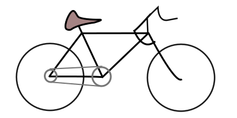

De contact punten met de weg en dus het meest significant voor de wegligging. Dus de meest effeciente plek voor onderhoud!
Dit wiel duwt je voort.
Complementeert het achterwiel.
Als je je binnenbanden gaat repareren dan kun je je fiets natuurlijk niet daar op laten staan! Dus flip je fiets om en zet hem stabiel op het zadel en stuur. Daarna kun je de band rustig inspecteren voor sherpe deeltjes, die wil je eruit halen. Ook handig om die plek te markeren, want grote kans dat daar een gaatje zit. Dan om de buitenband eraf te halen zijn verschillende methodes.
| Omstandigheid | Methode | |
|---|---|---|
| Buitenband zit losjes | Gebruik de palmen van je hand om de band los te maken. | |
| Buitenband zit strak | Gebruik wippertjes. | |
| Buitenband is niet los te maken | Gebruik mijn gepatenteerde techniek :). Zet een wippertje onder de band, dit is het entree punt. Nu zet er een wippertje onder het uitsteeksel dat je zojuist heb gemaakt. Dit kan een beetje peulen zijn. Pak het derde wippertje en doe weer hetzelfde met het nieuwe ingezette wippertje. Laat het het eerste wippertje staan. Werk dan beetje bij beetje met de twee wippertjes om en om door totdat de band loskomt. |